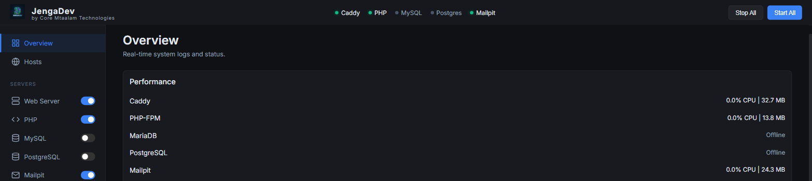

A local dev server for Windows that doesn't fight you.
JengaDev bundles Caddy, PHP, MySQL/MariaDB, PostgreSQL, SQLite, and Mailpit into one portable package — with automatic local HTTPS out of the box. A modern, free alternative to XAMPP and Laragon.


Why developers switch
Automatic local HTTPS
Caddy issues and trusts local certificates for every hosted site automatically — no manual mkcert setup like Laragon needs.
Mail testing built in
Mailpit catches every outgoing email from your hosted sites so you can inspect it in a browser — nothing to install separately.
Three databases, one tool
MySQL/MariaDB, PostgreSQL, and SQLite, each with an admin UI (phpMyAdmin or Adminer), switchable per project.
Browser dashboard
Start and stop services, manage hosts, databases, and PHP versions from an authenticated dashboard that opens automatically.
Per-host PHP logs
Every site gets its own error log with automatic size-based rotation, so logs stay readable as your project count grows.
Security-reviewed
Per-install API auth, checksum-verified downloads, and a locked-down install folder — see the security notes.
JengaDev vs. XAMPP vs. Laragon
| Feature | JengaDev | Laragon | XAMPP |
|---|---|---|---|
| Local HTTPS | Automatic (Caddy) | Manual mkcert setup | Not built in |
| Mail catcher | Built in (Mailpit) | Not bundled | Not bundled |
| Databases | MySQL/MariaDB + PostgreSQL + SQLite | MySQL/MariaDB + addons | MySQL/MariaDB |
| Control surface | Browser dashboard | Native tray app | Native control panel |
| License | Free & open source (MIT) | Free, closed source | Free, open source |
| Platforms | Windows | Windows | Windows / macOS / Linux |

Get started
Download the installer, run it (it asks for admin rights once), and JengaDev opens its dashboard automatically with an authenticated session already set up.